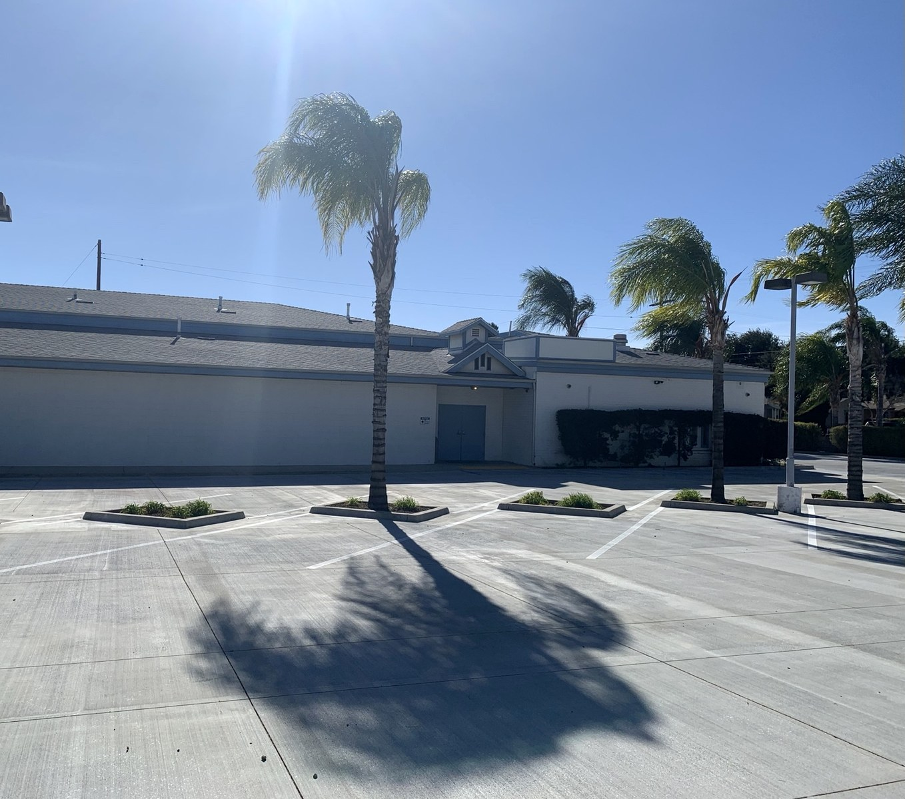

You Are Welcome
Visit Us
Join us for Sabbath worship, Bible study, prayer, and fellowship in San Bernardino.
Church Information
- Address
1650 North Mount Vernon
San Bernardino, CA 92411 - Telephone
(909) 473-0026 - Email
icog7@outlook.com - Website
icog7dailyholiness.com
Worship Schedule
Friday Night Prayer
7 p.m. Daylight Saving Time
6 p.m. Standard Time
Sabbath School
Saturday at 10 a.m.
General Service
Saturday at 12 p.m.
